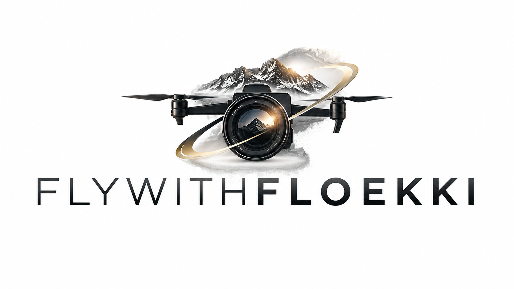

Unternehmen & Firmengelände
Gebäude, Standort, Produktion oder Außenanlagen aus der Luft – als Teil eines Imagevideos, für Social Media oder als eigenständiges Drohnenvideo.

Drohnenaufnahmen · FPV · Tirol
Professionelle Drohnenvideos in Tirol – von ruhigen Luftbildern bis zu dynamischen FPV-Flügen für Unternehmen, Events, Tourismus, Bauprojekte und private Ideen.
Mit klassischen Drohnenaufnahmen lassen sich Orte, Gebäude, Landschaften und Projekte aus einer Perspektive zeigen, die vom Boden aus nicht möglich ist. Ich produziere Drohnenvideos in Tirol für Unternehmen, Veranstaltungen, Tourismus, Bau und Infrastruktur sowie für private Projekte.
Für besonders dynamische Aufnahmen kommt zusätzlich die FPV-Drohne zum Einsatz. Sie eignet sich für schnelle Bewegungen, direkte Fly-throughs und fließende Kamerafahrten durch oder rund um Gebäude, Fahrzeuge und Veranstaltungsbereiche.
Gebäude, Standort, Produktion oder Außenanlagen aus der Luft – als Teil eines Imagevideos, für Social Media oder als eigenständiges Drohnenvideo.
Baufortschritte, Anlagen, Grundstücke und Infrastruktur übersichtlich dokumentieren und gleichzeitig visuell hochwertig präsentieren.
Hotels, Ausflugsziele, Berglandschaften und touristische Angebote aus Perspektiven zeigen, die die Umgebung und Lage unmittelbar erlebbar machen.
Veranstaltungsflächen, Sport, Feste und besondere Momente mit Überblicksaufnahmen und dynamischen Perspektiven ergänzen.
Dynamische Kamerafahrten durch Räume, Werkstätten, Geschäfte oder rund um Fahrzeuge und Gebäude – ideal für moderne Social-Media- und Imagevideos.
Haus, Grundstück, Photovoltaikanlage, Fahrzeug oder persönliche Erinnerungen: Auch kleinere private Projekte können individuell umgesetzt werden.
Je nach Projekt kombiniere ich ruhige Luftaufnahmen mit dynamischer FPV-Bewegung.
Die klassische Drohne eignet sich besonders für weite Landschaften, Gebäude, Grundstücke, Bauprojekte und ruhige Kamerafahrten. Eine FPV-Drohne ist deutlich beweglicher und kann eine Szene dynamisch durchfliegen. So entstehen Aufnahmen, die sich besonders gut für moderne Unternehmensvideos, Social Media, Fahrzeuge und außergewöhnliche Locations eignen.
Wir klären Motiv, Location, gewünschte Perspektiven und wofür die Aufnahmen später eingesetzt werden sollen.
Je nach Projekt entstehen klassische Luftbilder, FPV-Aufnahmen oder eine Kombination mit Kameraaufnahmen vom Boden.
Auf Wunsch übernehme ich auch Schnitt, Farbkorrektur, Musik, Ton und passende Versionen für Website, Instagram, Facebook oder andere Kanäle.
Der Preis richtet sich nach Location, Umfang, gewünschter Flugart und Nachbearbeitung. Schreib mir kurz, was du planst – dann kann ich den Aufwand konkret einschätzen.
Drohnenprojekt anfragenFlywithfloekki ist im Tiroler Oberland zuhause und für Drohnenproduktionen in Landeck, Imst und ganz Tirol sowie auf Anfrage auch in Vorarlberg und Südtirol unterwegs.
Jetzt unverbindlich anfragen →